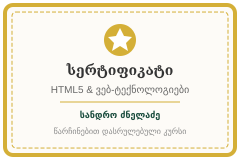

პირადი ბიოგრაფია & ჩემი ისტორია
ჩემი ინტერესი კომპიუტერული ტექნოლოგიების მიმართ სკოლის ასაკიდან დაიწყო. ყოველთვის მაინტერესებდა, თუ როგორ მუშაობს ინტერნეტი და როგორ იქმნება ის სისტემები, რომლებსაც ყოველდღიურად მილიონობით ადამიანი იყენებს.
დღესდღეობით აქტიურად ვეუფლები ვებ-ინჟინერიასა და თანამედროვე AI ტექნოლოგიებს. მიმაჩნია, რომ სწორი და ხარისხიანი ვებ-პროდუქტის საფუძველი არის სუფთა და სტანდარტებთან შესაბამისი სემანტიკური მარკირება, რომლის სრულფასოვან ათვისებასაც განსაკუთრებულ ყურადღებას ვუთმობ.
პირადი მონაცემები მოკლედ
- სრული სახელი:
- სანდრო ძნელაძე
- დაბადების თარიღი:
- საცხოვრებელი ადგილი:
- თბილისი, საქართველო
- ენობრივი ცოდნა:
-
- 🇬🇪 ქართული — მშობლიური (C2)
- 🇬🇧 ინგლისური — თავისუფალი / აკადემიური (B2 / C1)
- 🇩🇪 გერმანული — საბაზისო (A2)
- პროფესიული როლი:
- სტუდენტი / Junior Frontend Developer / AI Learner
აკადემიური განათლება
ჩემი ფორმალური განათლების ისტორია და აკადემიური მიღწევები:
| პერიოდი | საგანმანათლებლო დაწესებულება | საფეხური / ფაკულტეტი | სპეციალიზაცია | შეფასება / სტატუსი |
|---|---|---|---|---|
| – დღემდე | თბილისის სახელმწიფო / ტექნოლოგიური უნივერსიტეტი | ბაკალავრიატი | კომპიუტერული მეცნიერება & პროგრამული ინჟინერია | აქტიური სტუდენტი (GPA: 3.8/4.0) |
| – | ქ. თბილისის საჯარო სკოლა | სრული ზოგადი განათლება | ფიზიკა-მათემატიკური და ტექნიკური მიმართულება | წარჩინებით (ოქროს მედალოსანი) |
გავლილი პროფესიული კურსები & სერტიფიკატები
დამატებითი პროფესიული გადამზადება და ავტორიზებული სერტიფიცირება:

-
1. სემანტიკური HTML5 და თანამედროვე ვებ-სტანდარტები თარიღი:პლატფორმა: Web Development Academy
კურსის ფარგლებში დეტალურად შევისწავლე: DOM სტრუქტურა, ხელმისაწვდომობა (a11y), სემანტიკური მარკირება და SEO ოპტიმიზაცია.
-
2. პროგრამირების საფუძვლები და ალგორითმები თარიღი:პლატფორმა: CodeLearn Platform
მონაცემთა სტრუქტურები, ძირითადი ალგორითმები და ლოგიკური ამოცანების გადაჭრა.
-
3. AI ინსტრუმენტები დეველოპერებისთვის (Prompt Engineering) თარიღი:პლატფორმა: AI Pioneers Institute
ხელოვნური ინტელექტის ინტეგრაცია პროფესიულ სამუშაო პროცესში, პრომპტინგის ტექნიკები და ავტომატიზაცია.
ინტერესები & თავისუფალი დრო
ტექნოლოგიების გარდა, ჩემთვის მნიშვნელოვანია ბალანსი და გონებრივი აქტივობა:
ჭადრაკი
სტრატეგიული აზროვნებისა და გადაწყვეტილების მიღების უნარების გაუმჯობესება.
ტექნოლოგიური საკითხავი
წიგნები სუფთა კოდის, სისტემური დიზაინისა და AI მომავლის შესახებ.
ღია კოდის პროექტები
სხვადასხვა საინტერესო Open Source რეპოზიტორიების ანალიზი და შესწავლა.
მთაში ლაშქრობა
ბუნებაში დროის გატარება ენერგიის აღსადგენად.
- ჭადრაკი: სტრატეგიული აზროვნებისა და გადაწყვეტილების მიღების უნარების გაუმჯობესება.
- ტექნოლოგიური საკითხავი: წიგნები სუფთა კოდის, სისტემური დიზაინისა და AI მომავლის შესახებ.
- ღია კოდის (Open Source) პროექტები: სხვადასხვა საინტერესო რეპოზიტორიების ანალიზი და შესწავლა.
- მთაში ლაშქრობა: ბუნებაში დროის გატარება ენერგიის აღსადგენად.